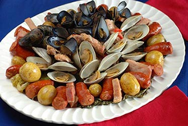
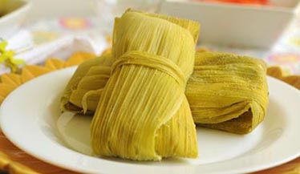

En Chile hay muchos comidas tradicionales de comer. Uno de los más populares son las empanadas. Son pasteles relleno que se hacen doblando con una masa en una forma redonda alrededor del relleno para hacer una media luna o, a veces se puede doblar en cuadrados. Pueden ser cocinados en el horno o frito, y tienen varios tipos de relleno. También hay Curanto, que es uno de las comidas más antiguos del mundo. Es popular en el sur de Chile. Se consta de marisco, pescado, cortes de carne, chorizo, papas, vegetales y chapaleles. La manera tradicional de cocinar Curanto es por un horno de piedra subterráneo pero también se puede cocinar en una olla. Hay Humitas que son como Tamales tradicionales hecho de maíz molido, albahaca dulce, manteca de cerdo, cebolla y pimentón o ají de color. La mezcla se envuelve en cáscaras de maíz y se asegura con tiras de maíz. En Chile se hagan por horneada o hervida.
Empanadas
Curantos
Humitas